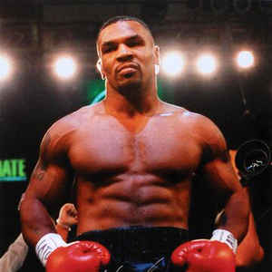

Első posztom
Erdélyi Miklós Posztja, 2021.11.20
Ő volt a legfiatalabb nehézsúlyú bokszoló, aki világbajnoki címet nyert.
Becenevei: „Iron Mike”, „Kid Dynamite”, „The Baddest Man on the Planet”. Az egyik leghíresebb bokszoló, nem csak tehetsége, hanem a ringen kívüli viselkedése miatt is.
58 profi mérkőzéséből 50-et megnyert, 44-et kiütéssel, 6-szor szenvedett vereséget, 2-szer nem hirdettek győztest.Tovább olvas

Második posztom
Erdélyi Miklós Posztja, 2021.11.20
A beat (vagy beatzene) egy könnyűzenei irányzat, amely az Egyesült Királyságban alakult ki, alapvetően a dzsesszel és a hagyományos könnyűzenével szembehelyezkedő stílusként.
Legjelentősebb képviselői a világszerte igen népszerű Beatles és a Rolling Stones voltak.Tovább olvas
Harmadik posztom
Erdélyi Miklós Posztja, 2021.11.20
A számítógép-programozás (vagy egyszerűen programozás) egy vagy több absztrakt algoritmus megvalósítását jelenti egy bizonyos programozási nyelven.
A programozásban megtaláljuk a művészet, a tudomány, a matematika és a mérnöki tudomány elemeit.Tovább olvas